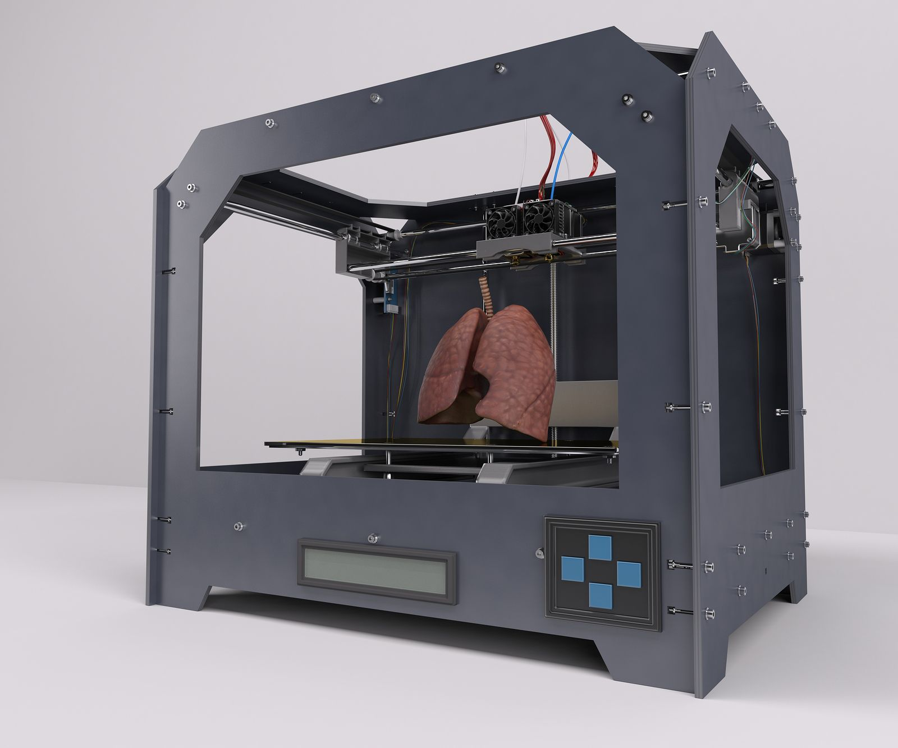

| Técnicas para su fabricación | |
| La impresora 3D va produciendo las distintas capas del modelo. Estas se van pegando con un gel que funciona a modo de pegamento y que luego se retira. Se toman muestras de un tejido o células madre del paciente, para ser cultivadas y expandidas en laboratorio para su posterior diferenciación a una línea celular específica.. |  |